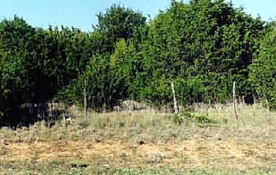

|
RANCHERS NEED FINANCIAL HELP AND By © Nol Ward Introduction Years of overstocking and overgrazing have kept financial returns from ranching very low and has caused extensive degradation and fragmentation of our country's native rangelands -- including desert, prairie, savanna, and forest types (Vallentine 1990; Heady & Child 1994; Holechek et al. 1998). This problem has been on-going ever since the formation of the range cattle industry in the 1860s (Stoddart & Smith 1943). This picture illustrates the degraded appearance of Decades of ineffective government programs Since the New Deal days of the 1930s various government programs have been initiated and massive amounts of money have been spent trying to reduce the negative effects of overstocking and overgrazing on our country's livestock ranching enterprises and our country's rangelands. Few, if any, of the programs have been successful. In fact, most have caused much more harm than good. Instead of encouraging ranchers to lightly stock their grazing lands and practice rotational grazing, government programs such as the now discontinued USDA Emergency Payments and Disaster Loans have contributed to oversupply of market animals, lower livestock prices, higher feed cost, overloading ranchers with debt, and degrading and fragmenting agriculturally and ecologically important rangelands. Instead of promoting sound range management practices, past government cost-share programs, such as the now discontinued Great Plains Conservation Program, have encouraged ranchers to overspend on fencing, watering points, brush control, seeding and other ranch improvements that, in many cases, were financially unjustified and unnecessary. A high percent of past USDA cost-share programs have resulted in ranchers overloading their grazing land with livestock, and in some cases, selling-off all or pieces of their grazing land in an attempt to recoup financial losses, recoup cost-share expenses, and or pay off debt. Thus, they end-up being a waste of both rancher and taxpayer money and counter-productive to rangeland health. Feeding hay in the summer, a sure sign of overgrazed Government needs to improve our country's The inability of past government subsidy programs to address the root cause of rangeland overstocking and overgrazing -- which is ranchers increasing their stocking rates and grazing more livestock in an attempt to improve their financial returns -- has caused me to form the following conclusion. It is long overdue for government to abandon non-effective subsidy programs, like the ones used in the past, and begin implementing programs that take a steady, voluntary, information-oriented approach toward reducing the negative effects of overstocking and overgrazing on our country's range livestock industry and our country's rangelands. Such an approach will require implementation of a government program centered around the use of scientifically proven range management practices, and supported by education in the field of range management. If this can be done, I see hope for ensuring a sustainable future for livestock ranching on our country's rangelands. Otherwise, the only thing I see is the eventual demise of our country's range livestock industry as well as our country's rangelands. I believe that, if overstocking and overgrazing and their devastating effects on our country's ranchers and our country's rangelands are allowed to continue, it will negatively effect the well-being of our nation. The case for light stocking I have been fundamentally opposed to past government subsidy programs (Ward 1998) and I have a basic dislike for past regulatory agendas. But, putting politics aside, I am convinced that some type of government program is needed to promote sound range management practices. That is, if we are planning on preventing the further destruction of our country's range livestock industry as well as the further degradation and fragmentation of our country's agriculturally and ecologically important rangelands. Decades of overuse of native range forage by grazing and browsing animals has caused
Based on my appraisal of current range conditions in Texas, I believe that a crash course on the importance of maintaining healthy rangelands and the role they play in providing various goods and services needed for human survival would benefit many ranchers and representatives in government, as well as the general public. It also seems apparent that ranchers, universities, government, and people in general need to understand that "less, down to a sustainable level" is better than "more, beyond a sustainable level". They also need to understand the "more" approach toward using our country's agriculturally and ecologically important rangelands will eventually lead to "nothing".  This picture illustrates the degraded fate of millions of acres of Texas To stop the devastating effects of overstocking and overgrazing on our country's range livestock industry and our country's agriculturally and ecologically important rangelands, I strongly recommend light stocking. Light stocking involves about 10 to 45 percent annual use of a range's primary forage species, depending on the type of rangeland. The long-term benefits of light stocking rates on rangelands have been well demonstrated by grazing studies at a variety of locations (Johnson 1953; Klipple & Costello 1960; Paulsen & Ares 1962; Houston & Woodward 1996; Smith 1967; Martin & Cable 1974; Holechek 1992; Holechek et. al. 1994). Several studies show that light stocking rates will actually give higher financial returns with less risk than moderate and heavy stocking rates (Johnson 1953; Klipple & Costello 1960; Houston & Woodward 1966; Martin 1975; Holechek 1992). Another benefit of light stocking is that it enhances environmental conditions -- soil stability and watershed health -- and increases range forage yield over time on most rangelands.
This picture shows the difference between heavy and Recently the Environmental Protection Agency (EPA) has become interested in developing programs for both cultivated land and rangelands that would reduce carbon dioxide levels in the atmosphere. Achievement of this goal requires increasing the amount of carbon sequestered in the soil by increasing above and below ground biomass (living and non-living vegetative matter). Already government programs are being considered that would pay farmers to use tillage practices that retain crop residues for carbon sequestration (Soil Humus Improvement Program, Gutknecht 1998). Light stocking is the surest way to apply this same approach to rangelands. My recommended government subsidy As a substitute for the ineffective government subsidy programs of the past, I recommend strong consideration be given to implementing a government program -- Rangeland Conservation Improvement Program (RCIP) -- that offers ranchers a FINANCIAL INCENTIVE (in the form of annual contract payments) to practice light stocking and other sound range management practices. One intended purpose of the program is to provide contractual guidance for the management, enhancement, and where needed, restoration of privately owned rangelands. Other goals would include:
In order to accomplish the intended purpose of my proposed government program will require a commitment of no less than 10 years from both government and ranchers. It's important to note that the government program that I'm recommending would be for privately owned rangelands only. This is not a program to be used in conjunction with public rangelands nor with intensively managed tame pastures. My definition of rangeland follows Holechek et al. (1998) which is any large expanse of land -- either desert, prairie, savanna, or forest type -- that is suitable for grazing by domestic livestock and wildlife, and is not fertilized, cultivated or irrigated. My definition of intensively managed tame pasture is any pasture land consisting of non-native forage species that require input in aquifers depleting irrigation, chemical fertilizers and pesticides, and fossil fuel powered farm machinery in order to be productive. Terms of Contract Agreement Under the terms of the contract agreement, the government would agree to compensate ranchers for their willingness to incorporate the use of light stocking and other sound range management practices in their respective ranching approach for a period of ten or more years. The ranchers that I've talked to in Texas tell me that, in order to encourage a large number of ranchers to participate in such a program, annual contact payments would have to be in line with the going rate for a five- to ten-year grazing or hunting lease in applicant's rangeland area. Comment - In north central Texas, the going rate for a long-term grazing lease for mid-grass rangeland is between $10 and $15 per acre per year. I'm sure that a grazing lease that included hunting would cost more. Future cost for grazing and hunting leases in Texas is expected to keep increasing in parallel with our states' rapidly growing population. I recommend that during the contract period, ranchers be required to include the following practices in their range management programs:
In addition to the above requirements, I recommend a special provision be included that requires ranchers during times of severe drought to reduce livestock numbers down to what their current range forage resources will support. Over the years, I've learned that the key to minimizing the devastating effects of drought on ranching enterprises and rangelands is keeping stocking rates compatible with current forage resources. I have also learned that when stocking rate reductions are initiated early, fewer animals will have to be sold over the course of a long extended drought. (Gill 1998) The purpose of this stipulation in the agreement would be to prevent severe overgrazing from occurring during times of low rainfall and poor growing conditions. My definition of overgrazing is reducing grass stubble heights below the guidelines provided by Holechek et al. (1998). This means maintaining height levels of 12 inches on tall-grasses, 6 inches on mid-grasses, and 2 to 3 inches on short-grasses. Here, after ranchers are under contractual agreement with government to practice sound range management, and have demonstrated the ability to do so, I can see real justification for additional contract agreements between government and ranchers to do needed range restoration work such as heavy brush control and reseeding. Program Supported by Education Considering all the money that federal and state governments have spent on range research and management programs, I find it truly amazing that so many ranchers have so little knowledge on this subject. Therefore, I strongly recommend that an educational initiative be attached to my recommended government program. The intent of this initiative would be to bring the principles and practices of sound range management into clear focus to the average rancher, and to establish important fundamentals on the proper grazing of rangelands. The information presented must be based on scientifically proven information as well as practical experience. I'm of the opinion that teaching ranchers how to properly manage livestock grazing on rangelands will play a vital role in ensuring the success of my recommended government program. Program Benefits I believe the government program that I've presented offers indisputable benefits to ranchers, society, and the environment. One benefit of the program to ranchers would include offering livestock ranchers a financial incentive to incorporate the use of light stocking and other sound range management practices in their ranching programs. Others would include reducing loss of livestock due to intake of poisonous plants; and reducing parasite and disease problems in livestock. The program would also reduce supplementary feed costs, as well as reduce financial, social, and biological risks in ranching. This picture illustrates the visual appearance of lightly Some of the benefits of the program to society and the environment would include preserving agriculturally and ecologically important rangeland for the following purposes:
Closing Comments As previously mentioned, I've objected to government subsidy programs in the past. But, after years of observing the negative effects of overstocking and overgrazing on our country's range livestock industry and our country's rangelands, with no end to the destruction in sight, I have changed my opinion. Now, I have come to conclusion that the implementation of a government program such as the one I've presented is absolutely necessary in order to prevent eventual demise of our country's range cattle industry and our country's agriculturally and ecologically important rangelands. Hopefully, our representatives in government will come to the same conclusion before all hope for accomplishing either one or both of these objectives becomes a totally lost and unachievable endeavor. Literature Cited Boykin, C.C., J.R. Gray, and D.P. Caton. 1962. "Ranch Production Adjustments to Drought in Eastern New Mexico." New Mexico Agri. Exp. Sta. Bull. 470. ___________________________________ The original version of this article was published in Rangelands, June 1999. The date for this revised unpublished version was November, 2015. The author, Nol Ward, is a retired small independent rancher, professional ranch manager, and beef cattle consultant. His e-mail address is: nol@consolidated.net Back to TRC's recommended reading http://www.texasranchingconservancy.com/rcrp.html |